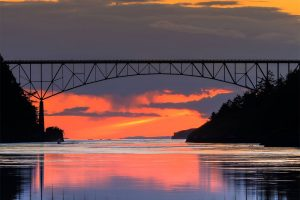
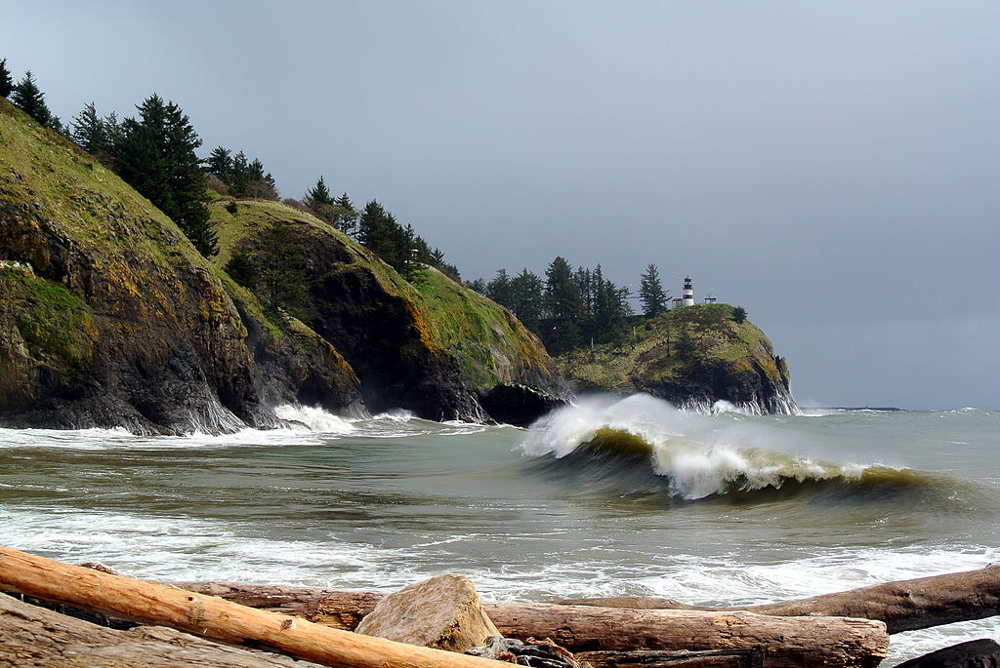
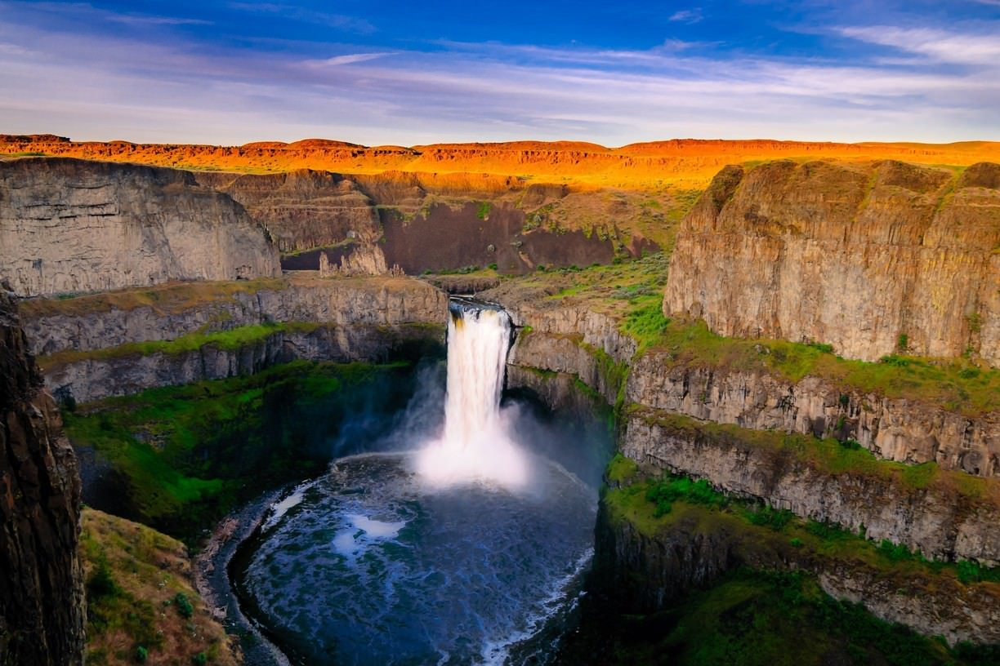

Pass: Discover Pass($30/year) or pay daily entry fee ($10/day)
Here is our list of Top Three state Parks
| Park | Got to Website | Camping | Hiking Trails | Mountain Biking | |
|---|---|---|---|---|---|
| Deception Pass State Park spreads over 4,134 acres, a marine and camping park with 77,000 feet of saltwater shoreline and 33,900 feet of freshwater shoreline on three lakes. Deception Pass and the high bridge connect Western Washington’s mainland with Whidbey and Fidalgo islands, creating a gateway for exploration. |  | 30 sites | None | 1.2 miles | 3 miles |
| Cape Disappointment is a 2,023-acre camping park on the Long Beach Peninsula, fronted by the Pacific Ocean and looking into the mouth of the Columbia River. The park offers yurts, cabins and unique historic vacation homes to meet travelers' diverse lodging needs. |  | 45 sites | 15 sites | 10 miles | 25 miles |
| The park offers three distinct views of the falls. The lower viewpoint provides a direct view; it is reached by a set of steps from the main day-use area adjacent to the parking lot. The second, at the end of a paved interpretive path, tells the story of the secluded canyon. Both the interpretive path and gravel secondary parking area lead to the third and highest viewpoint, the Fryxell Overlook, offering panoramic views of the falls and Palouse River Canyon. |  | 25 sites | None | 15 miles | None |